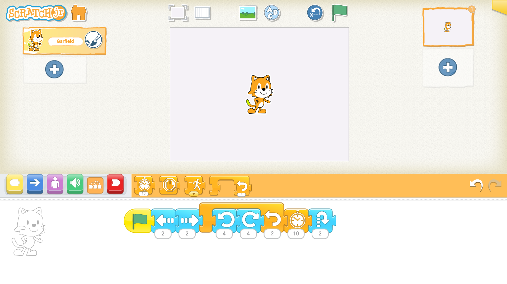

6 — Première progamation simple : Faisons danser notre personnage
Nous allons maintenant passer à notre première programmation. Nous allons utiliser des blocs de trois couleurs différentes : un bloc déclencheur d’événement, des blocs de déplacement ainsi que des blocs de contrôle. Montrer qu'en appuyant sur le chiffre situé en bas du bloc, on peut le modifier pour augmenter ou diminuer le nombre d'actions effectuées par ce bloc.
Illustration

7 — Choisir une scène et mettre du texte
Ici, il faudra expliquer aux élèves comment choisir une scène en appuyant sur l'icone correspondante. Ils devront choisir la scène du théâtre comme sur l'image projetée. Leur expliquer ensuite comment mettre du texte sur la scène ainsi que les options de police qui s'offrent à eux..
Illustration
8 — Comment exécuter le script en mode plein écran
Après avoir choisi une scène, il faudra maintenant expliquer aux élèves le bouton sur lequel il faut appuyer pour disposer du mode plein écran. Leur montrer ensuite l'icone du drapeau vert sur laquelle il faut appuyer pour démarrer l'exécution du script.
Illustration
Illustration

9 — Deuxième programmation effectuée en autonomie
Exercice d'application : demander aux élèves de faire une programmation avec les instructions suivantes (l'enseignant pourra les adapter au besoin) : - Utiliser un déclencheur d’événement différent du drapeau vert - Utiliser des blocs de couleur violette, verte et rouge - Choisir une scène et mettre du texte sur la scène.
Illustration
10 — Restitution
Il s'agira de faire une restitution. Poser des questions pour faite l'état des lieux des connaissances acquises durant ce module. Demander aux élèves à quoi correspond chaque couleur de bloc et leur fonction. Leur proposer également d'installer l'application chez eux à la maison avec l'aide de leurs parents.
Illustration
Evaluation
Veuillez cliquer sur ce lien pour accéeer à une évaluation disponible sur la plateforme Learning Apps